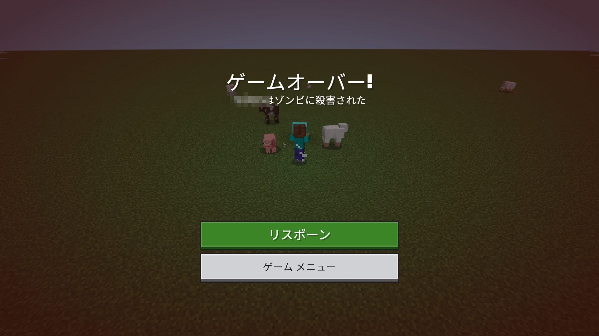

{ "protocol": 1,
"kind": "entity_die",
"seq": 4, "tick": 170455, …
"data": {
"entity": { "typeId": "minecraft:player",
"name": "Steve", … },
"cause": "entityAttack",
"dimension": "minecraft:overworld",
"location": {"x":300.5,"y":-60,"z":298.5},
"killer": { "typeId": "minecraft:zombie", … }
}
}